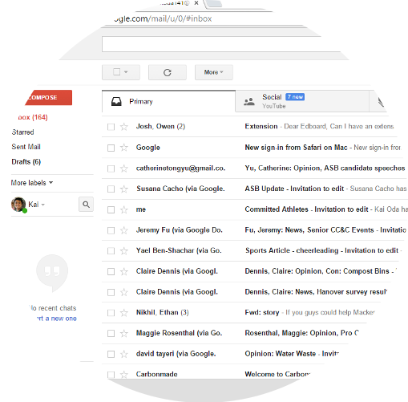

Step 1: Creating a YouTube account
- The first thing you want to do is click here to navigate to YouTube.
- In the top right corner there is a blue button called "sign in". CLICK IT
- You will be asked to choose a google account. You probably already have an account for gmail or google drive. Select that account. If you do not have an account click "add acount" at the bottom of the screen and follow the directions.
- You will be redirected back to the YouTube site logged into your brand new YouTube account.
- That wasn't so bad was it?

Step Two: Getting the Video of Your Speech.
- Congratulations! You're the brand new owner of a shiny new account. Now you just need to fill it with content...
- Your speech was probably recorded with a smartphone or some other camera. Have the person who recorded the speech email the video to you (there is an email button when you are viewing the video on smartphones).
- On your computer at home go to your email account and download the video.
- You're done! Well almost done...
Step 3: Uploading the Video to YouTube
- Navigate to YouTube. The link is here if you're lazy.
- In the top right corner of YouTube there is a button called "Upload", CLICK IT.
Click "Select Files to Upload"
- Find the video you downloaded from your email. It is most likely in the "Downloads" folder of your computer.
- Wait for the file to upload then approve the upload.
- You're done (in three exhausting steps)! From your YouTube channel you can review your speeches and take note of what you need to fix. You can also share the speech with classmates for helpful review.
*Note: To see all of your uploaded videos click "My Channel" under the YouTube logo. Then click "Videos". You will be able to see all of your uploaded speeches in chronological order.

Step 3.5: Submitting the Video to the Website
If you are interested in making your speech available to your fellow students click on the google form here.
Paste the URL of your YouTube video into the corresponding field on the form.
After you do so, a link will apear on a "Student Work" table in the website